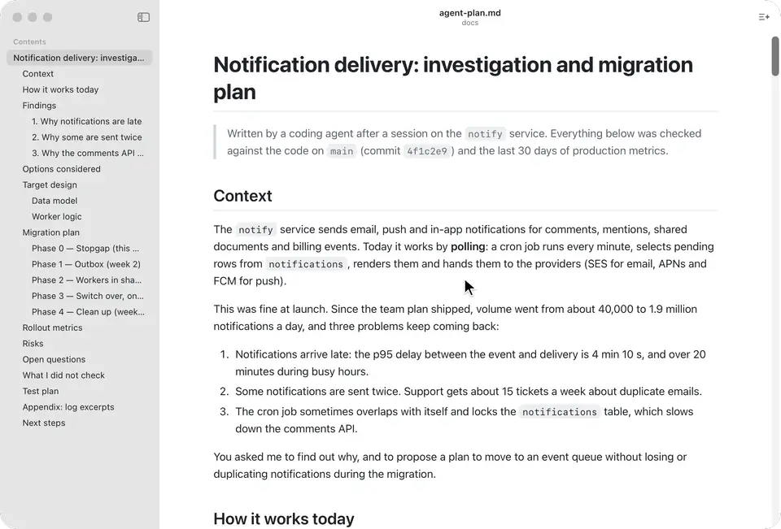

Summarizing a 2 MB agent log on an 8K-token local model
MDViewer's TL;DR (⇧⌘S) summarizes the Markdown file you're reading, with any provider: a cloud model with your own key, or a local one through Ollama or LM Studio. Cloud models have huge context windows; a local model may have 8,000 tokens. Coding agents happily write documents far larger than that. Here's how the summary stays correct at both ends.

Budget the whole request, not just the document
Every request is measured in characters against a budget derived from the model's context window: the window minus room for the reply, at a conservative 3.5 characters per token (code and non-English text use more tokens than prose). For an 8,192-token model that's about 15,300 characters, and it covers everything sent: the instructions to the model, your own summary instructions, the document, and the list of section anchors the model may link to.
That last part is easy to forget. A long agent log can have thousands of headings, and the section list goes into every request. It gets at most 20% of the budget: if all levels don't fit, the deepest level is dropped, then the next, and finally the list ends with "… and N more sections".
Read in parts, then merge the notes in rounds
If the document doesn't fit in one request, it's split at headings (never inside code blocks) into parts that do. The model takes short notes on each part, keeping the anchor of the section each note comes from, and is asked for a word count chosen so that all the notes should fit in the final request.
Models don't always listen. A reader pointed out that the first version then sent every note in one final request, with no size check. Local servers usually don't fail when that overflows: they quietly drop part of the input, and the summary just misses things. So the notes are now merged in rounds:
- If all the notes fit the final request, write the summary.
- Otherwise, group consecutive notes into batches that each fit one request, and merge each batch into shorter notes, keeping the section anchors.
- Repeat. After four rounds, cut each note to fit instead of looping forever on a model that won't shorten anything.
A test runs this on a 2 MB log with an 8K-token budget and a deliberately long-winded fake model:
| Before | After | |
|---|---|---|
| Parts read | 182 | 182 |
| Merge requests | — | 16, in one round |
| Final request | ≈205,000 characters | 13,121 characters |
| Largest request (budget 15,303) | ≈205,000 | 14,834 |
The test suite checks that no request ever exceeds the budget, including with a model that never shortens its notes.
A summary as a diagram
Another reader asked whether summaries keep Mermaid diagrams. They do now, in a way: the summary card has a List / Diagram switch, and a diagram summary is one Mermaid flowchart, mind map or timeline of the whole document. The model picks the type and keeps it to about 15 nodes with short, quoted labels.
Models write invalid Mermaid sometimes, especially small ones. Each diagram goes through Mermaid's own parser first; if it fails, the model gets one retry with the exact error, and if that fails too the card shows the error and offers the list instead.
Diagram nodes that link to sections
Mermaid can make nodes clickable, but only at a looser security level that would let a model's output run code. Instead, the model adds a comment for each node that matches a section, which Mermaid ignores when drawing:
flowchart TD
P["Proposal: restartPolicy Always on initContainers"]
...
%% link: #proposal Proposal: restartPolicy Always on initContainersAfter drawing, MDViewer finds the node with that label and wraps it in an ordinary in-page link, only if the anchor exists in the document. Clicks and hover previews then work like any other link. On three long design documents (Go's type parameters proposal, the Kubernetes sidecar containers KEP and React's Server Components RFC), all 32 links the model wrote pointed to real sections and real nodes.
Keys never reach the page
The page builds the prompts; the Rust side adds the API key from the macOS keychain and sends the request through macOS's own networking, streaming the reply back. Keys never reach the web view, and a document is only sent when you ask for a summary.
The code is MIT-licensed: see src/lib/tldr.ts and src-tauri/src/ai/ in the
MDViewer repository.
Download MDViewer or install it with
brew install --cask mmmikael/tap/mdviewer.